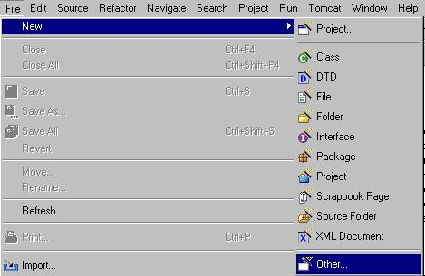
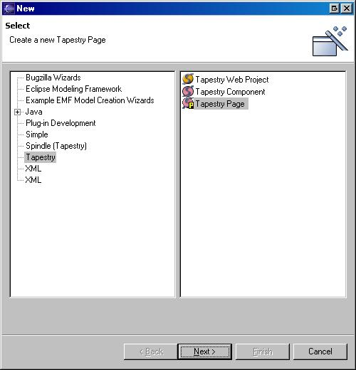
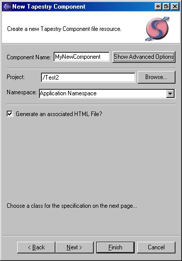
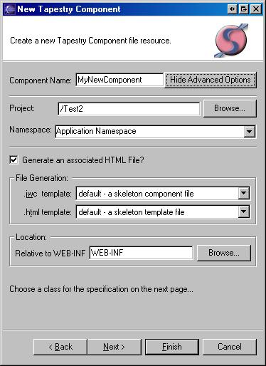

Note: this page has been updated to reflect the Wizard changes release since build 3.1.7
Tip - Select a resource in the project you want to create a page or component in before invoking the wizard. This selection is usually done in the Package Explorer. You don't have to do this but the wizard takes some context from the workbench selection state if available. If you don't you'll need to select the project in the wizard.
To access the page or component wizards, Choose "File"->"New"->"Other"

Creating a Tapestry page or component is simple. First choose:

The UI components for both wizards are identical

| Field | Notes | Required |
| Component Name | The name that will be used to gen the files (ie. MyComponent.jwc) | Yes |
| Show Advanced Options | Toggles additional fields for more options (Described below) | |
| Project | The Tapestry project to create in | Yes |
| Namespace | The namespace (application or library) that will own the new artifact | Yes |
| Generate an associated HTML file? | No | |
| Open all generated files in editors (removed - all are opened by default) | N/A | |
Once the required fields are filled in here you can click "Finish" and a page or component using the Tapestry default classes will be generated. In this mode, all generated files are placed in the same folder as the namespace file (.application or .library). Files are generated using the workspace default templates (or project default templates if define). To change where the generated files will be placed, or, to choose another template, see Advanced Options below.
To choose a different java class or to have the wizard generate a new class, click "Next"
To choose an existing class, ensure that the box "Choose an existing Class" is checked and click on the "Browse" button. The Eclipse JDT standard Type chooser dialog is used to pick the class.
To generate a new Java class, check the "Create a new class" box:

| Field | Notes | Required |
| Folder | The java source folder inside of which to create the new class | yes |
| Package | The package inside of which to create the class | yes - the default package is not allowed |
| Class name | yes | |
| Abstract | no | |
| Superclass | no - java.lang.Object will be the superclass if none specified | |
| Interface(s) | specify one or more interfaces the new class will implement | no |
Advanced Options
Clicking the Advanced Options button will cause some extra fields to appear. These fields give you the ability to specify:
The fields change depending on what kind of namespace has been chosen as the target namespace.
The following shows the fields that appear if a namespace hosted on the classpath is selected:

| Field | Notes | Required |
| .jwc template | The template used to generate a .jwc file | No |
| .html template | The template used to generate a .html file | No |
| Source Folder | The java source folder inside of which to create files | yes |
| Package | The package inside of which to create the files | yes - the default package is not allowed |
Otherwize the component wizard looks like this:

| Field | Notes | Required |
| .jwc template | The template used to generate a .jwc file | No |
| .html template | The template used to generate a .html file | No |
| Location | The folder in which Spindle will place files (must be relative to WEB-INF) | yes |
The page wizard is slightly different if the Application Namespace is chosen:

| Field | Notes | Required |
| .jwc template | The template used to generate a .jwc file | No |
| .html template | The template used to generate a .html file | No |
| Location | The folder in which Spindle will place files (must be relative to WEB-INF) | yes |
| Place template in ? | Tapestry allows page templates to reside in the context root, check this field to avail yourself of this option | No |